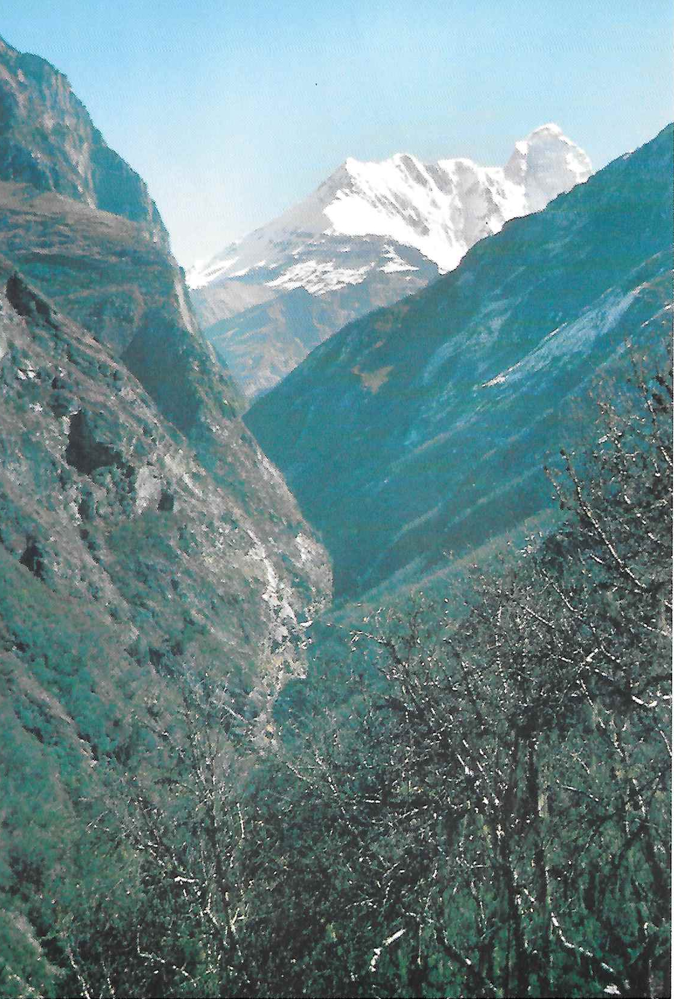

A First Himalayan Adventure
Nanda Devi Sanctuary September, October 1977
by Charles Knowles
The Nanda Devi Sanctuary is situated in the Garwhal Himalaya about two hundred miles north east of Delhi, twenty miles from the border with Tibet and fifty miles from the western end of Nepal. Within the Sanctuary and linked to its eastern rim is Nanda Devi the “Goddess Nanda” and India’s highest summit . In the days of the British Empire it was also the highest mountain in the Empire and the area has long been of particular interest to British mountaineers.
The Sanctuary consists of a ring of mountains seventy miles in circumference, minimum height 17,000 ft, average height about 20,000 ft and with no fewer than nineteen peaks over 21,000 ft. It is some two hundred and forty square miles in area and drained by the Rishi Ganga which breaks through the rim on the west in a stupendous gorge. For about fifty years surveyors, explorers and climbers including W.W. Graham, Longstaff, Bruce, Rutledge, Wilson and Somervell were unable to penetrate the “Inner Sanctuary” either over the rim, or at the point where the Rishi Ganga breaks through the ridges coming down from Maiktoli and Changabang. It was in 1934 that Eric Shipton and Bill Tilman with three Sherpa porters managed to force a route through the gorge at this point into the “Inner Sanctuary” and in 1936, Tilman and N.E. Odell reached the summit of Nanda Devi itself.
There was a lot of climbing activity in the Garwhal area in the 1920’s and 1930’s Bill Murray’s Scottish Himalayan Expedition was there in 1950, but the whole area was virtually closed to foreigners from the time of Chinese invasion of India in 1962 until 1976, except for joint expeditions including Indian members. One of these was Chris Bonington’s party which made the first ascent of the vast white granite dome of Changabang 22,250 ft , approaching from the Ramani Glacier over Shipton’s Col to the Changabang Glacier and then via the narrow east ridge to the summit.
After that and before our visit, there had been only a limited number of other climbing expeditions into the “Inner Sanctuary” and for the last few years access had been restricted for conservation reasons the local nomadic shepherds had found another high level route into the “Inner Sanctuary” and were jeopardising the burral wild blue Himalayan sheep and other animals by overgrazing.
For me it all began when the telephone rang one evening in October 1976. A friend at the other end asked: “Would you like to join us on a trip to the Himalaya?” The immediate answer was, of course: “YES!”
The concept was for a small lightweight party to trek into the Nanda Devi Sanctuary and possibly “have a look at” one or more of the peaks.
Originally it was to be a mixed bunch of four “middle aged” friends from other climbing and skiing trips: Donald an architect, Hamish a writer and Stephen a physicist in addition to myself. We thought it was a good idea to have a doctor in the party so Frank was invited to join us. Later, two younger members, Peter a computer expert and Ian an engineer, joined in to make a total of seven. We had intended to go in the pre monsoon period, but during our preparations we learned that there was usually a short period of more settled weather post monsoon and before the onset of winter. We changed our plans so that we could do the nine day trek into the Sanctuary as the monsoon faded and have good weather whilst we were up there.
So as not to be too much of a burden on our hosts whilst completing formalities and purchasing provisions and fuel, we split the party and travelled out to Delhi on different dates. The first group took the “Musoorie Express” up to Hardwar and then went on by local train to Rishi Kesh and by bus up to Joshimath. Ian stayed on in Delhi to meet Stephen, Frank and myself on our arrival. The four of us completed our shopping, made a day trip to Agra to see the famous Taj Mahal erected in 1632 53 and then followed up to Joshimath. The others had rented a motel room there as a base where they could leave gear whilst they went off on a week’s acclimatization trek up the Bhyunder Valley “The Valley of the Flowers” visited by Frank Smythe in
- We followed on a four day trek, camping in the meadows at
10,000 ft and climbing to the Sikh temple at Hemkund at 14,000 ft. Unfortunately we were rather late to see the flowers at their best like us, they were being battered by the monsoon rains.
The whole party assembled back at the motel room where we spent the next three days purchasing rice, flour, ghee and vegetables, making everything up into approximately fifty six pound porter loads. We completed arrangements for a lorry from Joshimath to Lata which we shared with a five member Australian expedition heading for Changabang. There was a shortage of porters and we had to use a herd of goats each carrying about twenty two pounds in panniers, in addition to our thirty two porters.
The trek proper started on September 10th and half an hour after leaving the roadside, we were in the headman’s house in the village of Lata drinking rakshi. We staggered out two hours later to climb a steep track up the wooded hillside to our first “Tilman Stage” campsite, where we used the actual platforms levelled by Shipton and Tilman when they found this route into the Sanctuary forty three years previously.
The route into the Sanctuary crosses the Dharansi Pass at 15,400 ft, descends to a lovely wooded alp at Dibrugheta and then traverses high above the Rishi Gorge. It was from here that we caught our first glimpse of “The Mountain Goddess” as the clouds parted for a few minutes.
Deodi campsite was reached after crossing the Rishi Ganga on a rickety bridge and there the porters made a sacrificial offering of a goat, cooked over a wood fire and then eaten for supper that night.
Our next campsite was at Ramani at the foot of the gorge forming the entrance to the “Inner Sanctuary”. The goats had to return from here as the next obstacle was a 1,500 feet high almost vertical damp cliff, covered with loose vegetation, which we found quite difficult and intimidating shortly after that we came to the famous “Tilman Slabs” with a drop of about 1400 feet into the Rishi Gorge below. Fortunately there was a fixed rope across them, left by a large Japanese party which had gone up ten days previously.
From Tilchaunani campsite we had magnificent views of Nanda Devi 25,695 ft and Nanda Devi East 24,391 ft , the peaks on the Sanctuary rim, the confluence of the rivers dividing the South and North Inner Sanctuaries and which we had to cross also the area near the snout of the Changabang Glacier where we hoped to make our base camp.
We rigged a pulley system with ropes from boulders to get porters, loads and ourselves over the first river torrent at the bottom of a deep ravine. The porters refused to cross the second river as it was necessary to wade through almost waist deep glacier melt water with only a hand line for support, so we paid them off and ferried the loads over ourselves. It was a very cold and tired team that camped alongside the river that night. The following day we walked up the valley on soft springy turf, with ever changing and exciting views of the surrounding glaciers and peaks. We set up base camp in an absolutely idyllic position at 14,000 ft, with abundant supplies of juniper wood and a freshwater spring, alongside the Uttar Rishi glacier at the foot of the North Ridge of Nanda Devi which rose 11,000 feet above us.
For the next four weeks we went out singly or in groups of two or three for periods of up to four or five days, exploring the Inner Sanctuary, crossing the glaciers and camping in some utterly enchanting situations, returning to base camp for a rest and to pick up more provisions for our next trip.
All too soon, just as Stephen and I were packing our sacks for another four day trek, the first porters returned to carry out for us. They were three days earlier than we had arranged because they expected a change in the weather. The others agreed that Stephen and I should complete our plans, leaving them to sort things out with the porters.
When we got back to base camp there was only one tent and two porters there, all the others having left for Joshimath three days earlier! The four of us followed next morning. There was a light covering of snow which enhanced the autumn colours, but which on the steep shaded sides of the ravines and the gorge made the route finding and the going very much more difficult. Late in the afternoon, our porters refused to go any further and we were forced to build a stone platform for one two man tent into which all four of had to squeeze.
Next morning we realised just how right the porters had been, as on the next section snow was still lying on extremely steep grass and rock slopes where a slip would have resulted in a fall of at least 1,500 feet. We descended with the utmost caution, the porters frequently calling for a rope which in fact provided only psychological belay as it was impossible to drive an axe into the frozen ground and there were seldom suitable rocks for secure belays.
At Ramani campsite an upset billy can of water scalded Stephen’s foot but fortunately, as a result of my first aid treatment, he was able to continue the walk out next morning. We camped again at Dibrugheta and reached Lata the following day, tired and hungry but elated at having completed one of the most interesting and challenging treks one is likely to tackle in a lifetime’s walking. The journey by Indian public transport back to Delhi was only slightly less interesting and challenging. There we were briefly reunited with the rest of the party before flying home. Although the Sanctuary is at the present time a “forbidden area” there are still lots of beautiful, interesting and remote places to visit in the Garwhal Himalaya.

Figure 1: Nanda Devi from the Rishi Ganga

Figure 2: Nanda Devi from within the Sanctuary